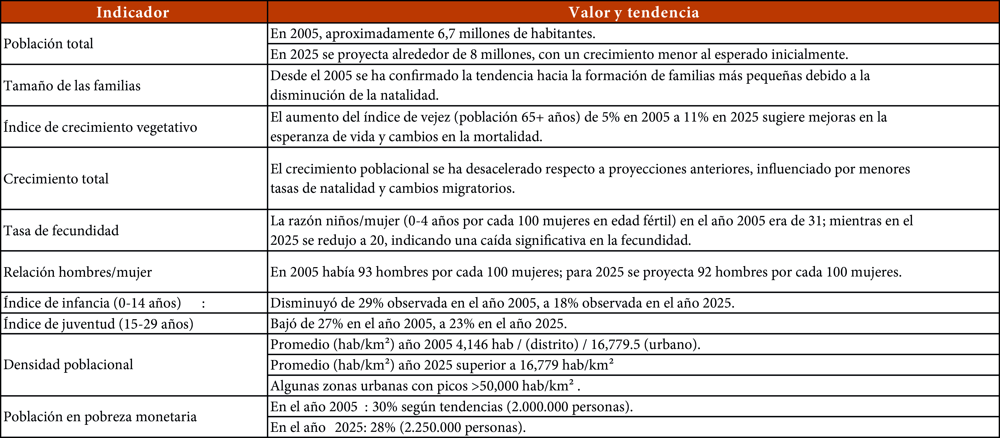
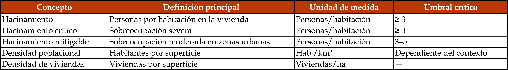
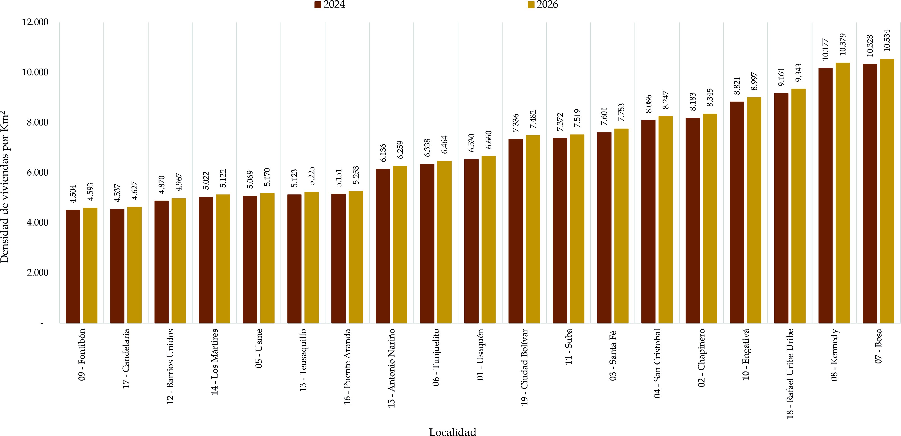
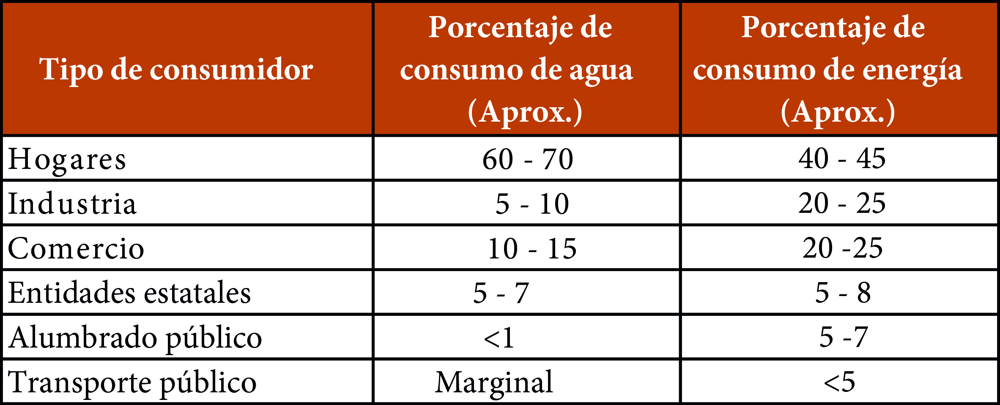
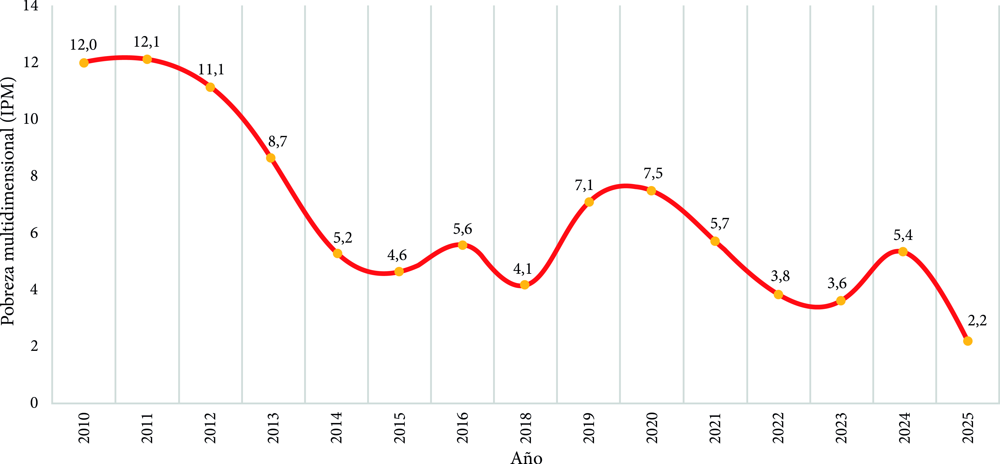
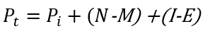
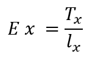
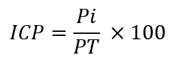

Componente 3 Cuántos y quienes somos
Introducción
Esta unidad identifica los principales indicadores demográficos de Bogotá, así como aquellos relevantes para la gestión del hábitat urbano y la ocupación del espacio. También aborda políticas públicas basadas en las tendencias demográficas, los cambios en la demanda de servicios domiciliarios, y examina la clasificación de la población según niveles de pobreza, incluyendo estrategias para la erradicación de la pobreza absoluta.
3.1. Indicadores demográficos de Bogotá (2005-2025 aprox.)
Los principales indicadores demográficos de Bogotá en los últimos veinte años reflejan una transición marcada por cambios en la estructura poblacional. Estos datos deben actualizarse de manera periódica para una adecuada planificación. A continuación, se resumen los datos más relevantes que deben actualizarse periódicamente.
Tabla 2. Indicadores principales de ocupación: valor y tendencia

Fuente: Elaboración Ernesto Rojas Morales.Entre 2005 y 2025, los indicadores demográficos de Bogotá muestran una clara transición hacia un modelo de ciudad con menor crecimiento y mayor envejecimiento. La reducción del tamaño promedio de los hogares, el descenso en el número de nacimientos y el aumento de la población adulta han redefinido las necesidades urbanas. Estas tendencias inciden directamente en la planificación del hábitat, la provisión de servicios y la formulación de políticas públicas orientadas a la calidad de vida.
3.2. Indicadores para la gestión del hábitat urbano
a. Hacinamiento: más de dos personas por habitación.
b. Hacinamiento crítico: tres o más personas por habitación.
c. Hacinamiento mitigable: entre tres y cinco personas por habitación en zonas urbanas.
Tabla 3. Indicadores de hacinamiento y densidad habitacional

Fuente: Elaboración Ernesto Rojas Morales.El hacinamiento se refiere a una sobreocupación en la vivienda que compromete la higiene y seguridad. Aunque el número de personas por habitación es el principal indicador, en estudios de necesidades básicas insatisfechas (NBI) se suelen considerar otros factores complementarios para caracterizar la precariedad habitacional, como las condiciones físicas de la vivienda (materiales de construcción, tipo de vivienda); el acceso a servicios básicos (agua potable, saneamiento) y la superficie disponible por persona.
a. Índice de hacinamiento: Número de personas en el hogar / Número de habitaciones.
b. Densidad urbana: Habitantes por kilómetro cuadrado.
c. Densidad de población: Número de habitantes / Superficie en km2.
d. Densidad de viviendas: Número de viviendas / Superficie en hectáreas.
Gráfico 13. Densidad de viviendas por Km2 por localidades 2024-2026

Fuente: Elaboración Sociedad de Mejoras y Ornato de Bogotá con base en DANE; Cálculos SMOBEl hacinamiento mide la sobreocupación dentro de la vivienda, mientras que la densidad habitacional evalúa la concentración de población o viviendas en un área específica.
En el contexto urbano de Bogotá, estos indicadores permiten identificar desigualdades territoriales y condiciones diferenciales de habitabilidad asociadas a la localización, el tipo de vivienda y la disponibilidad de infraestructura. El hacinamiento, en sus distintas formas, suele concentrarse en sectores con déficit habitacional, viviendas informales o con limitaciones en el acceso a servicios básicos, mientras que los indicadores de densidad urbana y habitacional reflejan patrones de ocupación del suelo que inciden en la calidad de vida y la sostenibilidad del entorno urbano.
La lectura conjunta de estos indicadores resulta fundamental para orientar la gestión del hábitat urbano, ya que permite priorizar intervenciones en mejoramiento de vivienda, renovación urbana y provisión de equipamientos y servicios. Asimismo, su análisis contribuye a la formulación de políticas públicas orientadas a reducir la precariedad habitacional y promover un uso más eficiente y equitativo del suelo en Bogotá.
3.3. Políticas públicas basadas en las tendencias demográficas
El uso de proyecciones no oficiales o desactualizadas puede llevar a sobreestimaciones o subestimaciones significativas, por ejemplo, estudios previos y proyecciones de otras fuentes han sobrestimado el crecimiento poblacional de Bogotá, generando errores en la planeación urbana y en la estimación de necesidades de vivienda y servicios. El DANE actualiza sus proyecciones con base en datos recientes y eventos como la pandemia del COVID-19, que aceleró la caída de la fecundidad y modificó las dinámicas migratorias.
A partir del año 2025, se proyecta una disminución de la población de Bogotá, lo que representa una oportunidad para ajustar las políticas públicas enfocadas en lograr cobertura total, alta calidad y continuidad en los servicios.
En este contexto, las políticas públicas basadas en las tendencias demográficas deben orientarse a responder a una población que crece más lentamente y presenta una estructura etaria envejecida. Esto implica priorizar estrategias de optimización del uso del suelo urbano, el mejoramiento de la calidad de la vivienda existente y la adecuación de la infraestructura y los servicios a las necesidades de una población adulta y adulta mayor.
Asimismo, el aprovechamiento del bono demográfico en su fase final requiere políticas integrales de empleo, educación y formación, que permitan fortalecer la productividad y preparar a la ciudad para el incremento futuro de la población dependiente. En materia de hábitat urbano, resulta fundamental avanzar hacia modelos de planeación que privilegien la renovación urbana, la accesibilidad a servicios y la reducción de desigualdades territoriales, utilizando información demográfica actualizada como insumo central para la toma de decisiones.
De este modo, la incorporación sistemática de las tendencias demográficas en el diseño de políticas públicas se convierte en un elemento clave para garantizar un desarrollo urbano sostenible y equitativo en Bogotá.
3.4. La demanda de los servicios domiciliares cambiará de tendencia
Las prioridades de gasto e inversión de las empresas prestadoras de los servicios podrían cambiar; se tornará más importante el satisfacer los déficits de cobertura, antes que hacer nuevas expansiones en la producción o distribución para atender una población futura que no existirá.
Tabla 4. Porcentaje de consumo

Fuente: Elaboración Ernesto Rojas Morales.· Servicios domiciliaros básicos gratuitos: Ahora será posible proyectar la conveniente estrategia de salud pública de proporcionar a cada persona, de manera gratuita, los servicios públicos domiciliares de agua, energía y conectividad a internet, en cantidades vitales. Esta política se puede aplicar para toda la población, dada la consideración de que, ya no será necesario capitalizar parte del ingreso por tarifas para expandir el servicio en el futuro.
· Mejor calidad de los servicios de educación: La reducción del número de estudiantes, debido al descenso de la natalidad y al aumento de la deserción escolar, ha impactado la sostenibilidad financiera de los colegios, especialmente los privados. En 2024 se cerraron 160 colegios privados en Bogotá. La incapacidad para cubrir costos operativos, como salarios de docentes, mantenimiento y recursos educativos, afecta tanto a colegios públicos como privados. Es muy posible que, ante la baja demanda de cupos, no se requieran grandes inversiones para construir nuevas edificaciones escolares y se pueda emplear esos dineros en la mejora de la calidad y dotación de las instituciones existentes.
· Economía del cuidado como estrategia de empleo: Conociendo la ubicación de la población dependiente, es posible diseñar políticas en materia de asistencia social. Las personas que requieren cuidados o acompañamiento están unas en cuantías decrecientes, como es el caso de los menores de edad, y otras en número creciente como en el caso de los adultos mayores. Con base en los datos demográficos es ahora factible realizar programas de cuidado, dentro de la modalidad de la economía social, donde aquellas personas que no tienen un empleo en la economía productiva puedan incorporarse a una planta de personal remunerada encargada de cuidar a la población necesitada de atención.
· Vivienda para hogares mínimos: El tamaño promedio de los hogares ha disminuido (de 3,4 personas en 2005 a 3,1 en 2018). Se prevé un aumento de hogares nucleares monoparentales, especialmente con jefatura femenina, y una disminución relativa de hogares nucleares biparentales tradicionales.
También se observa una mayor heterogeneidad en las formas familiares, incluyendo nuevas formas de convivencia. La estructura familiar en Bogotá hacia 2050 será más diversa y fragmentada, con hogares más pequeños y variados, reflejando procesos de transición demográfica, cambios culturales y económicos que impactan la planificación social, urbana y de servicios públicos en la ciudad.
La proporción de hogares conformados por una sola persona crecerá, impulsada por factores como el envejecimiento poblacional, mayor independencia económica y cambios en las formas de convivencia. La formación, reproducción y disolución de hogares estarán influenciadas por la salida de los miembros jóvenes, uniones tardías o menos frecuentes, y la posibilidad de cohabitación entre personas no familiares para compartir gastos.
Con los datos demográficos se puede precisar la cantidad y tamaño de los hogares y el ritmo de su crecimiento. Es necesario y conveniente adecuar las regulaciones urbanas que permitan el reúso de las edificaciones desuetas existentes y construir nuevas para atender esta progresiva demanda de vivienda para hogares pequeños o en formación, bien sea en arrendamiento o en propiedad.
3.5. Clasificación de la población según nivel de pobreza
La población de una ciudad puede clasificarse según su nivel de pobreza utilizando diferentes criterios:
a. Pobreza absoluta: Se refiere a la situación en la que una persona o familia no tiene cubiertas sus necesidades básicas para vivir dignamente, como alimentación, vivienda, agua potable, higiene y salud. El umbral de pobreza absoluta se determina por un nivel mínimo de recursos o ingresos, por ejemplo, el Banco Mundial considera pobreza extrema a quienes viven con menos de 1,90 dólares al día. Para clasificar a la población en pobreza absoluta, se compara el ingreso o consumo per cápita del hogar con el valor de una canasta mínima de bienes y servicios (línea de pobreza).
b. Vulnerabilidad: No es pobreza en sí misma, sino el nivel de riesgo que tiene una persona o familia de caer en la pobreza ante una eventualidad, como una crisis económica, pérdida de empleo, enfermedad, etc. Carecen de protección social suficiente y están expuestas a factores que pueden empujarlas a la pobreza y suele estar asociada a la informalidad laboral, falta de ahorros o redes de apoyo.
c. Pobreza multidimensional (IPM): Mide la pobreza considerando varias dimensiones: la educación, la salud, las condiciones de vivienda, el acceso a servicios públicos y condiciones de la niñez y juventud. Un hogar se considera pobre multidimensionalmente si presenta carencias en un porcentaje significativo de los indicadores definidos (en Colombia, si está privado en al menos el 33,3% de los indicadores del IPM).
Gráfico 14. Pobreza multidimensional (IPM) de Bogotá 2010-2025

Fuente: Elaboración Sociedad de Mejoras y Ornato de Bogotá con base en DANE; Cálculos SMOB3.6. Erradicación de la pobreza absoluta
El conocimiento preciso de la población residente en determinadas áreas de la ciudad y la calidad de sus viviendas permite identificar las llamadas bolsas de pobreza en las distintas zonas urbanas. Esta información facilitaría la implementación de estrategias que, en otros países, han demostrado ser muy eficaces para erradicar la pobreza. Una de ellas es la Renta Básica Universal (RBU), que consiste en realizar, por medios electrónicos, una transferencia mensual de dinero a cada una de las personas dependientes (menores de edad, personas con discapacidad y adultos mayores) que habitan en zonas urbanas previamente identificadas como en condición de pobreza.
Se trata de una asignación monetaria que garantiza un nivel mínimo de ingresos para cubrir las necesidades personales básicas, sin que el beneficiario deba cumplir requisitos o condiciones específicas. Este enfoque permite a las personas decidir libremente en qué gastar el dinero recibido. Al cubrir las necesidades básicas, se reducen los riesgos de exclusión social y pobreza extrema.
Esta modalidad también simplifica los mecanismos de protección social, ya que reemplaza otros subsidios o ayudas de bienestar social en especie o en servicios. Al proporcionar un ingreso estable, contribuye a reducir la vulnerabilidad frente al desempleo, la enfermedad o las crisis económicas.
Anexos componente 3
Ecuación 1. Ecuación compensadora
Es una fórmula demográfica que permite estimar el cambio de una población entre dos momentos determinados, a partir de la relación entre la población inicial y los principales componentes que generan su variación: los nacimientos, las defunciones, la inmigración y la emigración. Asimismo, permite estimar alguno de estos componentes cuando los demás son conocidos. Esta ecuación constituye una herramienta fundamental para el análisis de la dinámica poblacional, al integrar el crecimiento natural y los movimientos migratorios que determinan el cambio demográfico de una población.

Pt: Población en el tiempo final. P1: Población en el tiempo inicial. N: Nacimientos en el período. M: Muertes en el período. I: Inmigración (personas que llegan). E: Emigración (personas que se van).
Ecuación 2. Edad mediana
Es una medida estadística de posición que corresponde a la edad que divide a la población en dos grupos de igual tamaño: el 50 % de la población tiene una edad inferior a la mediana y el otro 50 % tiene una edad superior. Este indicador permite analizar la estructura etaria de una población y aproximarse a su grado de envejecimiento, así como identificar transformaciones en la composición por edades y comparar su comportamiento entre diferentes territorios o períodos.
![]()
EM: Es la edad mediana de la población. PH / M: Es la población total de hombres o mujeres, según el sexo para el cual se realiza el cálculo. P T: Es la población total correspondiente al año de referencia.
Ecuación 3. Esperanza de vida
Es el número promedio de años que se espera que viva una persona, bajo el supuesto de que se mantienen durante el tiempo las condiciones y tendencias de mortalidad observadas en un período de referencia. Este indicador permite aproximarse a las condiciones de supervivencia y longevidad de una población y analizar su evolución a lo largo del tiempo. Sus variaciones reflejan cambios en las condiciones sociales, económicas y sanitarias que inciden en los niveles de mortalidad de la población.

Ex: Es la esperanza de vida de una edad x. Tx: Es el número total de años que les resta por vivir, en conjunto, a las personas que han alcanzado la edad exacta x, según las condiciones de mortalidad del período de referencia. lx: Es el número de personas que alcanzan con vida la edad exacta x, dentro de una cohorte o generación inicial utilizada para construir la tabla de mortalidad.
Ecuación 4. Etapas vitales
Es el indicador que permite analizar la estructura y evolución de la población de acuerdo con diferentes grupos de edad, identificando los cambios en su composición a lo largo del tiempo. Para efectos del análisis, la población se clasifica en tres etapas vitales: i) población de 0 a 14 años; ii) población de 15 a 59 años, correspondiente a la población en edad potencialmente activa; y iii) población de 60 a 90 años, correspondiente a los adultos mayores. Esta clasificación permite identificar transformaciones en la estructura demográfica, como el peso relativo de la población infantil, adulta y mayor, así como la intensidad y velocidad del proceso de envejecimiento poblacional y de transición demográfica.
Variables: Población de hombres y mujeres de 0 a 14 años; población de hombres y mujeres de 15 a 59 años; y población de hombres y mujeres de 60 a 90 años.
![]() EV: Es el porcentaje de población correspondiente a una determinada etapa vital.
PEV: Es la población correspondiente a la etapa vital analizada.
PT: Es la población total de referencia.
100: Es el factor utilizado para expresar el resultado como porcentaje.
Rangos de etapa: 0-14 años; 15-59 años; y 60-90 años.
EV: Es el porcentaje de población correspondiente a una determinada etapa vital.
PEV: Es la población correspondiente a la etapa vital analizada.
PT: Es la población total de referencia.
100: Es el factor utilizado para expresar el resultado como porcentaje.
Rangos de etapa: 0-14 años; 15-59 años; y 60-90 años.
Ecuación 5. Índice de dependencia
Es la relación entre la población considerada potencialmente dependiente —menores de 15 años y mayores de 60 años— y la población en edad potencialmente activa, comprendida entre los 15 y 60 años. Este indicador permite aproximarse a la estructura de dependencia demográfica de una población, al mostrar la proporción de personas en edades potencialmente dependientes respecto de aquellas en edades potencialmente activas. Se expresa como el número de personas potencialmente dependientes por cada 100 personas en edad potencialmente activa.
![]()
ID: Es el índice de dependencia de la población. P 60-90: Es la población entre 60 y 90 años. P 0-15: Es la población entre 0 y 15 años. P 15-60: Es la población entre 15 y 60 años. 100: Es el factor utilizado para expresar el resultado como porcentaje.
Ecuación 6. Índice de masculinidad
Es un indicador demográfico que expresa la relación entre el número de hombres y el número de mujeres en una población determinada. Permite identificar la composición de la población según sexo y comparar la proporción de hombres respecto de las mujeres en un territorio o grupo poblacional. Se expresa como el número de hombres por cada 100 mujeres.
![]()
IM: Es el índice de masculinidad de la población. H: Es el número de hombres de la población en el período de referencia. M: Es el número de mujeres de la población en el período de referencia. 100: Es el factor utilizado para expresar el resultado como el número de hombres por cada 100 mujeres.
Ecuación 7. Índice de porcentaje de concentración de la población
Es un indicador que permite determinar la proporción de la población que se concentra en una unidad territorial específica con respecto a la población total del territorio de referencia. Este indicador permite analizar cómo se distribuye la población entre diferentes unidades territoriales, identificar aquellas que concentran una mayor o menor proporción de habitantes y comparar la distribución demográfica entre territorios.

ICP: Índice de porcentaje de concentración de la población.
Pi: Población de la unidad territorial i.
Pt: Población total del territorio de referencia.
100: Factor para expresar el resultado como porcentaje.
Ecuación 8. Tasa de crecimiento vegetativo
Es un indicador demográfico que mide el crecimiento o decrecimiento natural de una población durante un período determinado, a partir de la diferencia entre el número de nacimientos y el número de defunciones, sin considerar los movimientos migratorios. Permite identificar la variación de la población atribuible exclusivamente a estos dos componentes demográficos. Su resultado se expresa por cada 1.000 habitantes.
![]()
TCV: Es la tasa de crecimiento vegetativo de la población durante el período de referencia. N: Es el número de nacimientos registrados durante el período de referencia. D: Es el número de defunciones registradas durante el período de referencia. P: Es la población media durante el período de referencia. 1.000: Es el factor de estandarización utilizado para expresar la tasa por cada mil habitantes.
Ecuación 9. Tasa de migración
Es un indicador que mide el impacto de los movimientos migratorios en una población determinada. Se calcula como la diferencia entre la inmigración (personas que llegan) y la emigración (personas que se van) en relación con el total de habitantes, expresada por cada 1.000 habitantes en un período determinado.
![]()
TM: Es la tasa de migración de la población. I: Es el número de inmigrantes registrados durante el período de referencia. E: Es el número de emigrantes registrados durante el período de referencia. P: Es la población total durante el período de referencia. 1.000: Es el factor utilizado para expresar la tasa por cada mil habitantes.
Ecuación 10. Tasa de urbanización
Es la diferencia entre la tasa de crecimiento intercensal medio anual de la población urbana y la tasa de crecimiento intercensal medio anual de la población total durante un período determinado. Este indicador permite identificar la dinámica de crecimiento de la población urbana en relación con el crecimiento de la población total y aproximarse al proceso de urbanización y a las transformaciones en la distribución territorial de la población.
![]()
TU: Es la tasa de urbanización. Ru: Es la tasa de crecimiento intercensal medio anual de la población urbana. Rt: Es la tasa de crecimiento intercensal medio anual de la población total.
Ecuación 11**. Tasa bruta de natalidad
Número de nacimientos vivos ocurridos durante un año, por cada 1.000 habitantes de la población calculada a mitad de período. Permite medir en forma más precisa el incremento de la población, a partir de la frecuencia con que ocurren los nacimientos en una población.
![]()
TBN: Es la tasa bruta de natalidad. N: Es el número de nacimientos ocurridos durante el período de referencia. P: Es la población media o estimada a mitad del período de referencia. 1.000: Es el factor utilizado para expresar la tasa por cada mil habitantes.
Ecuación 12. Tasa de fecundidad
Es el indicador que mide la frecuencia de los nacimientos en relación con el número de mujeres en edad reproductiva, generalmente entre los 15 y 49 años, durante un período determinado. Expresa el número de nacimientos ocurridos por cada 1.000 mujeres en edad reproductiva y permite aproximarse al comportamiento reproductivo de una población.
![]()
TGF: Es la tasa general de fecundidad, que expresa el número de nacimientos por cada 1.000 mujeres en edad reproductiva. N: Es el número de nacimientos ocurridos durante el período de referencia. M₁₅₋₄₉: Es el número de mujeres entre 15 y 49 años durante el período de referencia. 1.000: Es el factor utilizado para expresar la tasa por cada mil mujeres en edad reproductiva.
Ecuación 13 Tasa bruta de mortalidad
Cociente entre el número de defunciones ocurridas en un determinado período y la población medida en ese mismo momento. Permite medir la frecuencia relativa de las muertes de una población dada, en un intervalo de tiempo. La tasa de mortalidad (denominada también la tasa bruta de mortalidad) es el número de muertes por cada 1.000 habitantes durante un año determinado. Las tasas brutas de mortalidad se ven afectadas por muchas características de la población, especialmente la estructura por edad.
![]()
TBM: Es la tasa bruta de mortalidad. D: Es el número de defunciones ocurridas durante el período de referencia. P: Es la población total correspondiente al período de referencia. 1.000: Es el factor utilizado para expresar la tasa por cada mil habitantes.
Ecuación 14. Tasa de crecimiento poblacional
La tasa de crecimiento poblacional mide el cambio porcentual en el número de personas de un lugar durante un año o un período específico. Una tasa positiva indica un aumento en la población, mientras que una tasa negativa señala una disminución. Este proporciona información valiosa sobre las evolución histórica y las tendencias, futuras de la población, lo que permite proponer políticas públicas.
![]()
t: Es la tasa de crecimiento poblacional. n: Es el número de periodos. Pf: Es la población final. Pi: Es la población inicial.
Ecuación 15. Densidad poblacional
Es la cantidad de personas que habitan en un barrio o urbanización por unidad de área. Corresponde a la relación entre el número de habitantes y la superficie en la que habitan y, para efectos del indicador, el resultado se expresa en habitantes por hectárea (hab./ha). La superficie puede ser bruta, cuando considera la totalidad del área del territorio, o neta, cuando descuenta aquellas áreas no aptas para vivienda, tales como áreas protegidas, malla vial, espacio público y equipamientos.

DP: Es la densidad poblacional, expresada en habitantes por hectárea (hab./ha). P: Es la población total del territorio de referencia, expresada en número de habitantes. A: Es el área del territorio de referencia, expresada en hectáreas.
Ecuación 16. Densidad de viviendas por km2
Es el indicador que mide la cantidad de viviendas existentes en relación con la superficie del territorio. Expresa el número de viviendas por cada kilómetro cuadrado (viviendas/km²) y permite identificar la intensidad de ocupación residencial del territorio.

DV: Es la densidad de viviendas, expresada en número de viviendas por kilómetro cuadrado (viviendas/km²).
V: Es el número total de viviendas existentes en el territorio de referencia.
A: Es el área total del territorio de referencia, expresada en kilómetros cuadrados (km²).
Ecuación 17. Índice de hacinamiento
Es el indicador que mide la relación entre el número de personas que habitan una vivienda y el número de habitaciones disponibles para dormir. Permite identificar el nivel de ocupación de las viviendas y aproximarse a las condiciones de habitabilidad de la población. Un valor más alto indica una mayor concentración de personas por habitación y, por tanto, mayores condiciones de hacinamiento.

IH: Es el índice de hacinamiento, que expresa el número promedio de personas por habitación disponible para dormir. P: Es el número total de personas que habitan las viviendas. H: Es el número total de habitaciones disponibles para dormir.
Ecuación 18. Índice de Pobreza Multidimensional (IPM)
Es un indicador que permite identificar a la población en situación de pobreza a partir de las privaciones que experimentan las personas en dimensiones como la salud, la educación, el trabajo, la niñez y las condiciones de la vivienda. De esta manera, proporciona una medida de pobreza que trasciende el ingreso monetario y permite analizar la intensidad de las privaciones que afectan a la población. El IPM constituye una herramienta relevante para la formulación, focalización, seguimiento y evaluación de las políticas públicas.
![]()
IPM: Es el Índice de Pobreza Multidimensional, que combina la proporción de personas en situación de pobreza multidimensional y la intensidad de las privaciones que experimentan. H: Es la incidencia de la pobreza multidimensional, correspondiente a la proporción de personas identificadas como pobres multidimensionales. A: Es la intensidad de la pobreza multidimensional, correspondiente al promedio de las privaciones que experimentan las personas identificadas como pobres multidimensionales.
Sección 4.2.2 Conflictos socioecológicos y justicia ambiental Sección 4.2.3 La sostenibilidad territorial en Bogotá Sección 4.3.3 Evolución de la ocupación del territorio Sección 5.1.1 Sistema vial y de transporte Sección 5.1.2 Sistema de Servicios Públicos Sección 5.1.3 Sistema de espacio público Sección 5.2.1 Sistema de equipamientos Sección 5.2.2 Sistema de hábitat